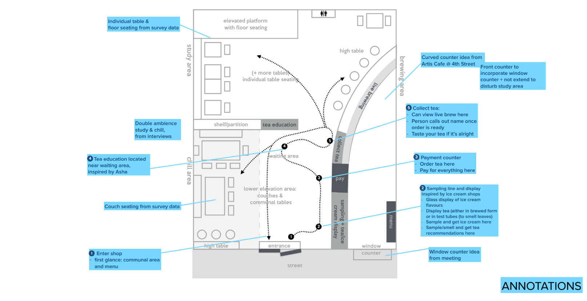
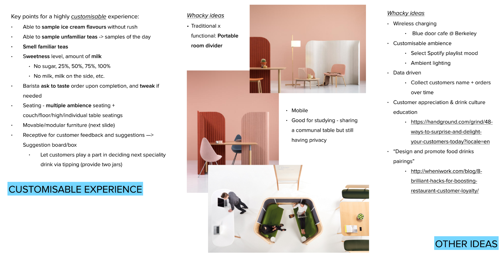
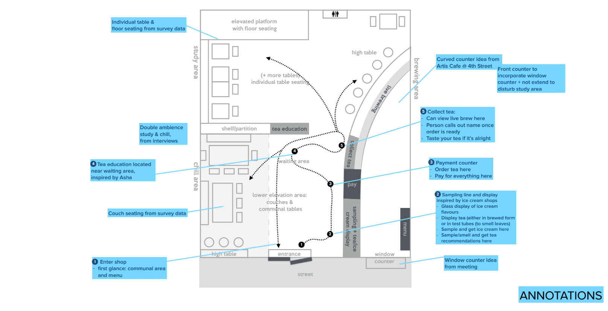
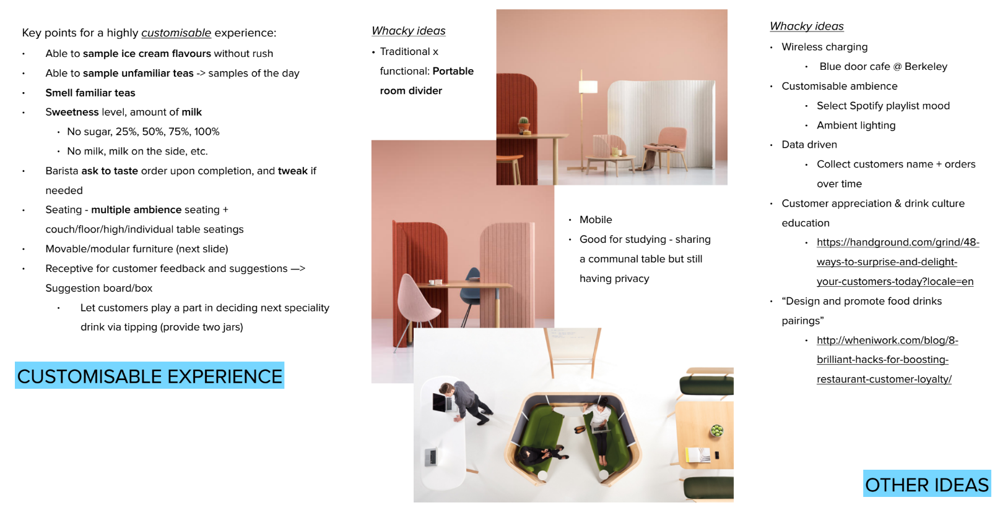

Introduction
In Fall 2016, through Berkeley Innovation, I served as a user experience consultant for Hexa Tea — a local startup poised to meet growing demand for tea products. Our goal? To bring the richness of traditional tea culture to Berkeley, in the form of a modern cafe.
I worked on a team with 4 others — Kathleen Hsu, Mimi Largier, Vanessa Ng, and Josephine Zschiesche. Together, we conducted extensive user research and created a range of prototypes centered around the Hexa Tea customer experience.
A Modern Teahouse
The initial hypothesis was simple: there are no stores at Berkeley that sell truly great tea with a matching customer experience. Our client sought to change this — they had sourced a range of quality Taiwanese teas, and we were brought on to design a complementary tea house experience.
Of course, similar environments existed throughout Berkeley — it would be up to us to differentiate Hexa Tea from an already mature market. This was an exciting opportunity; a chance to not only refine the cafe experience, but to meet and identify user needs currently unfulfilled by cafe spaces in Berkeley.
With this premise, our team developed an initial set of guiding questions:
- What ambiance and experience were customers expecting from a “tea house” and cafe?
- What pain points exist with current cafes at Berkeley?
- How could we incorporate traditional tea culture to improve user experience?
And finally:
- Using this knowledge, how can we craft a uniquely HEXA experience?
Step 1: User Research
Our most immediate goal was to understand the existing cafe environments and how users interacted with them. To that end, our team employed a two-pronged approach to research.
The first approach was through interviews of our target market: the students and young professionals who comprise most of Berkeley. Over the course of the project, each member of our team conducted 12 directed in-person interviews over several rounds; we asked questions ranging from daily eating habits to issues with local cafes.
Initial results suggested that our hypothesis was correct — as we narrowed on the daily habits of our target users and their relationships with existing cafes, we found a variety of pain points, ranging from a lack of power outlets to menu selection. This was promising; it meant there was room for improvement.
With these insights, we were able to focus and design for 3 primary archetypes. Each persona embodied a set of user needs and frustrations that we had identified in our target market. They were, as follows:
- Joanna — the Tea Lover, seeking quality tea tasting and options.
- Daniel — the Hurried Student, looking for speed and convenience.
- Natasha — the Instagrammer, primary concerned with the shop’s aesthetic qualities.


The personas that we created, based on our user research
We referenced these personas throughout the project as a way to keep the users at the forefront of our design, enabling us to better empathize with our target users.
The second approach to our research was to observe the existing cafe environments throughout Berkeley. The goal here was to examine ordinary, everyday user behavior as they interacted with existing spaces. To accomplish this, each member of our team visited different local cafes, taking notes on how physical space design, menu selection, and barista service affected the overall customer flow. The following observation was by Josephine at uCafe —

Observational user research
The insight we collected from these interviews and observations would be applied in our next steps, as we launched into ideation and prototyping for various aspects of the HEXA experience.
Step 1.5: User Research Continued & Synthesis
At this point in the project, we ran into an issue. We had set out to define the “ideal” cafe experience, and though we were able to identify recurring pain points, our interviews yielded limited insight into how to create a truly great cafe experience — for instance, opinions on atmosphere varied based on personal preference, and we found it tricky to quantify relevant variables such as lighting and interior decor, let alone pinpoint an “ideal” version of it. We needed a broader data set, and we needed to refocus on which elements Hexa Tea could provide a unique and exceptional experience in.
With this in mind, we sent out surveys through social media, designed to reach a broader audience. These surveys contained picture comparisons of various cafe settings, which we had chosen to reflect different elements of the experience (e.g. one set of pictures would ask quiz takers to choose between a brightly lit cafe environment and a dim, low light environment). In hindsight, this survey method was not ideal, as we weren’t able to completely control what quiz takers were choosing between; confounding variables within each photo may have influenced decisions. Nevertheless, this method did allow us to move forward with a clearer picture of what customers desired from a cafe setting. Based on these surveys information, I created a visual summary of our results.

A visual summary of the survey results.
With this information, we regrouped with our client to discuss what other aspects we should focus on. Previously, we had taken a bottom up approach, allowing user research to shape design decisions; now we examined the problem from the top down, asking ourselves which tangible elements we could really do well. Ultimately, with the research we conducted and the goals developed with our client, we were able to create a wide range of prototypes, honing in on key elements of the HEXA user experience.
By the end of the project, we were able to present our client a comprehensive menu, several approaches to the in-store user journey, and guidelines for physical space design. The following sections elaborate on these processes.
Step 2: Creating the Menu
Our client originally presented us with a menu consisting of 4 teas that he had sourced, each offered in 4 configurations — hot, cold, ice cream, boba — for a total of 16 menu options. The limited selection was meant to convey confidence in the product, and to put the focus on high-quality traditional teas.
However, we quickly determined that this would not be sufficient. Throughout our interviews, we noted that many customers expected so called “fruity teas”, such as the Peach Mango Tea from Starbucks, as well as tea lattes.
We decided to create a rotating menu of seasonal drinks with these “fruity teas”, meant to compliment the original menu. We also chose to modify the original menu, removing the ice cream in favor of hot and cold latte options. This, we felt, was the best way to maintain our commitment to traditional tea while offering a breadth of options.
Completed menu assets
Following the drink menu, we found that many students at Berkeley lacked a reliable breakfast option, as few stores seemed to provide the convenience and menu that students wanted on their way to class. Our client hoped that Hexa Tea would be able to pursue this market, and suggested a menu based on tea snacks served with tea around the world.
Given our time constraints, the iteration on this menu was rapid. We quickly identified a menu with our client that we believed would maximize convenience, while maintaining our cultural focus on the tea experience. Our interviews returned a positive response on this menu; many found that it was comprehensive while remaining accessible, which was our goal.
As a final touch, we connected the menu to a map of the world, stressing our commitment to international tea culture. The completed food menu can be seen here:
A visual food menu — meant as a large wall printout
Step 3: Spatial Design Prototypes & A Cultural Atmosphere
Compared to the food and drink menu, this was a much broader, less tangible goal. It was difficult to approach this issue, though we had consistently touched upon this issue in our interviews and surveys.
 



Conclusion: The HEXA Experience
This project was focused, first and foremost, on the collection of user data and market needs — the primary goal was always to create a deep and thorough understanding of our target users and their needs. As such, a lot of our deliverables were intangible quantifications, based on interviews and surveys. These were communicated constantly to our client throughout the project, and unfortunately cannot be easily displayed in this project write up.
From this project, I gained invaluable experience in conducting user research, understanding user flows, and seeing a product from conception to completion. The first store should be opening soon!
This project was also my first extensive design project, and it was almost frightening in the breadth of the initial problem. Ultimately, I felt I did a good job managing my responsibilities and leading at crucial points. It was an exciting project, and I think that we were able to produce deliverables that could not only be implemented immediately, but also form a foundation for Hexa Tea's future brand development.